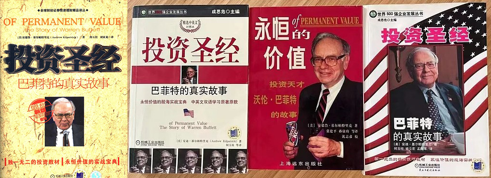

该书在中国一共有4个版本：
我看的是第1本。对同一人名的翻译，在书的不同地方会有不一样的情况。翻译水准不是最高的，但是也还算合格。看完中文版的时候，有时候需要拿英文版的进行对照，否则一些人名、公司名称是查不到对应的中文资料的。
用于对巴菲特事迹进行考古的书。
该书在中国一共有4个版本：
- 第1本 特点就是全，由英文2005版翻译来的；
- 第2本 是中英对照；
- 第3本 是上海远东出版社出版；
- 第4本 是一个精简版；
我看的是第1本。对同一人名的翻译，在书的不同地方会有不一样的情况。翻译水准不是最高的，但是也还算合格。看完中文版的时候，有时候需要拿英文版的进行对照，否则一些人名、公司名称是查不到对应的中文资料的。
用于对巴菲特事迹进行考古的书。